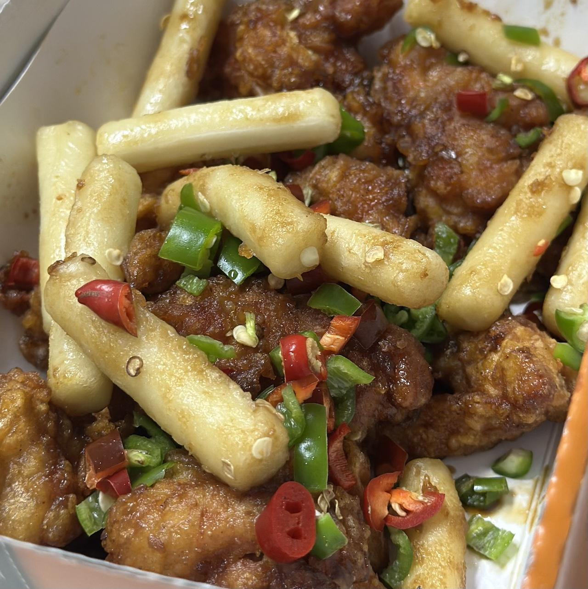

또래오래의 고추단짠 순살 치킨에 관한 기록
슬슬 또래오래의 메뉴들을 하나씩 격파(?)해 나가며 정복에 점점 가까워지고 있다. 지난 후라이드반+양념반 순살 그리고 갈릭 순살에 이어 이번에는 고추단짠 순살 치킨에 도전해 봤다.
이번에 주문한 정확한 메뉴명은 '맵단짠 고추단짠시리즈' 카테고리의 '고추단짠 순살'이다. 설명으론 단짠치킨에 청양고추와 건고추를 더한 메뉴라나 뭐라나. 어쨌든 언제나 그랬듯이 이번에도 배달은 참 빨리왔다.
패키지를 열자마자 청양고추 특유의 코를 찌르는 매콤한 공기가 느껴졌다. 맵찔이라 매운 음식은 혐오하는 편이지만 청양고추의 알싸한 맛은 적당히만 먹는다면 참 좋아한다. 참을 수가 없었다. 젓가락이 마구 마음대로 움직이게 만드는 그런 냄새였다.
 사진 찍는 걸 깜빡하고 한참 먹다가 찍은 사진
정신을 차려보니 4분의 1 정도를 이미 먹어버리고 있었다. 그리하여 황급하게 찍은 사진이 위의 사진이다. 떡이 많아보이지만 떡은 거의 손대지 않고 치킨만 먹은 상황이라는 점은 설명해야 할 것 같다.
어쨌거나 보다시피 고추가 잔뜩 들어있는 간장치킨 혹은 갈릭치킨 그런 느낌이다. 실제로 맛도 그랬다. 그냥 치킨만 먹으면 고추 향이 느껴지고 매운맛은 아주 살짝 느껴지는 그런 간장치킨 맛이었다.
왜 이렇게 맵지 않나 하면서 청양고추를 한두조각씩 올려서 먹으니 그때야 정답을 찾은 것 같았다. 처음 먹었을 때는 머리에 전기가 통하는 것 같았다. 이것이 진가구나. 달고 짭짜름하면서도 느끼한 맛이 느껴지다 갑자기 톡 쏘는 적당하게 매운 맛에 습격 당하며 느끼한 맛이 중화되면서도 여전히 맛있는 맛은 남아있는 자극적인 맛이다.
굳이 더 설명할 필요는 없을 지도 모르겠지만 여전히 닭다리살만 들어있는 순살이었다. 이러니 순살치킨계에서 또래오래의 명성이 사라질 수가 없다.
안타깝게도 후라이드에 비하면 튀김이 눅눅해지는 것은 양념이 묻은 치킨에겐 어쩔 수 없는 숙명 같은 일이다. 하지만 고추의 씹히는 느낌이 그 눅눅함을 잘 보완해 주는 아주 훌륭한 관계가 형성된 치킨이었다.
단점으로 약간 짜서 밥과 같이 먹어야 할 수준이었다는 것이 있다. 그리고 청양고추를 따로 집어서 올려 먹어야 했다는 점이 약간 귀찮긴 했다. 어디어디처럼 청양고추를 잘 말려서 가루를 낸 것을 뿌려보는 것은 어떨까. 그리고 홍고추는 개인적으로 좋아하지 않아서 그냥 뺐어도 되었을 것 같다.
이번 기록의 결론은?
다시 시켜 먹을 의향이 마구마구 든다.
이 한 마디면 될 것 같다. 개인적으로도 배우자에게도 이 톡 쏘는 수준의 가벼운 매운맛은 역시 호감 덩어리다. 아마도 식사에 식상해질 때마다 한번 쯤 시켜먹을 대상으로 떠오르지 않을까 생각된다.
물론 좀 더 바삭한 느낌이 들었으면 참 좋겠지만 말이다.